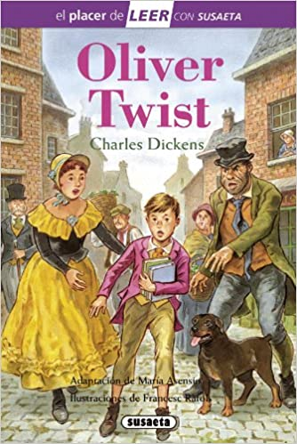

La libreria
de Claudia
En este sitio encontraras mis sinceras reseñas a libros muy conocidos en la literatura universal
Como gran amante de la lectura, soy lo que se llama comunmente un comelibros 😅 Me encanta descubrir nuevas historias, conocer nuevos personajes y analizar como son desarrollados. Aprende que quiere transmitir el autor con sus letras y asi aprender nuevas experiencias que tal vez no he vivido en vida real. Gracias a los libros he desarrollado mi manera de pensar y ver el mundo, ya que estos son un inmenso mar de conocimiento.
A través de los años autores de diversos países han aportado su obra literaria al mundo, entretenimiento. Sin embargo la cultura inglesa se destaca por su prolífica contribución a la lectura. Contando con autores de talla excepcional, que con su prosa han convertido sus escritos en clásicos de la literatura británica. El día de hoy traemos 5 libros imprescindibles de la literatura inglesa.
Una obra excepcional, escrita por Jane Austen. En sus páginas se mezcla el romance, las apariencias, la traición. Su protagonista Elizabeth Bennet vive atormentada por el deseo de su madre de sentar cabeza, todo parece ir bien hasta que conoce al enigmático Señor Darcy. Una serie de sucesos relevantes hacen que Elizabeth sienta repulsión por Mr. Darcy pero a la vez una atracción inexplicable, todo esto mientras lucha por sobrellevar los prejuicios de la sociedad que la rodea, el amor de su hermana Jane, y el orgullo que cree debe tener una dama en la sociedad inglesa.


No es de extrañar que el universo mágico de Harry Potter sea hoy mundialmente conocido, la autora J.K Rowling dió vida a un mundo al que secretamente todos queremos visitar. La saga cuenta con siete obras, cada una con una trama adictiva. El mítico niño mago es un favorito de grandes como de chicos. Con una narración amigable y fluida la autora nos transporta a Hogwarts una escuela para magos donde ocurren sucesos emocionantes. Personajes increíbles, luchas con varitas mágicas, criaturas de leyenda y un villano aterrador la saga de Harry Potter logra cautivarnos por completo.
Uno de los libros más tristes, escrito por Charles Dickens narra la miserable vida de un niño llamado Oliver Twits. Huérfano de padres, recluido en un horfanato, obligado a unirse a una pandilla de ladrones, maltratado por cada persona que se le cruza, el pobre Oliver sufre día y noche. En su camino se cruza el Señor Brownlow, un aristócrata que enseñará al joven Oliver a leer y escribir. Pero no todo es color de rosa para el muchacho, le ocurrirán más desgracias antes de que pueda ser feliz completamente. En las páginas de esta obra llorarás y podrás ver de cerca la pobreza y la necesidad.
Fantástica novela romántica. Un clásico de la literatura inglesa. Escrita por Charlotte Bronte nos cuenta la historia de la joven Jane Eyre, sus vivencias en casa de su tía que la odia, la convivencia con sus primos que la golpean. La vida de Jane da un giro cuando entra al servicio del Señor Rochester, un hombre aparentemente viudo que tiene como pupila a una joven niña. Múltiples misterios rodean la mansión, ruidos en las noches, gritos. La protagonista se acerca al señor Rochester ya que le produce misterio, a la vez una atracción va creciendo entre ambos. Un libro imprescindible para los amantes del misterio y el romance.
Excelente libro para los que odian las obras muy extensas. Rebelión en la Granja es una novela que describe de forma irónica el comunismo de la antigua Unión Soviética. Escrita por George Orwell en sus páginas podemos ver disímiles similitudes con este sistema de gobierno, todo representado con animales lo que le da jocosidad a la obra.